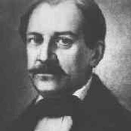

Three Poets

1808 - 24 August 1868
Stuff about Negruzzi.
Costache Negruzzi was born in 1808 at Trifestii Vechi (today Hermeziu), near the Prut, near Iasi, being the son of Dinu Negruţ, of a rogue origin, who became a boyar in the ranks of the glass, and Sofie Hermeziu, the daughter of justice of justice Iorgu Hermeziu. In 1809 his mother died.
Costache Negruzzi began his studies in Greek with one of the Greek teachers most renowned in Iasi, and to read Romanian himself learned from a book by Petru Maior, as he confesses himself in an article titled How I Learned Romanian , very interesting for the details he gives about the methods used by the teachers of that time.
© 2010 Nobody at all | Contact